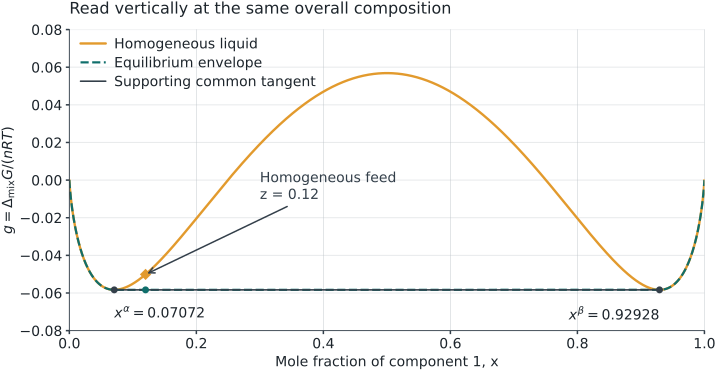
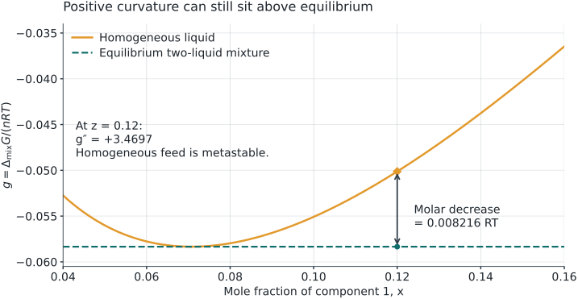
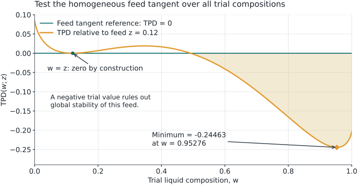
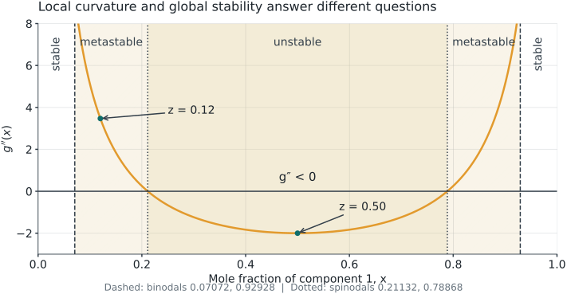

Week 3 review · Calculate, compare, explain
24 October 2026
Open: the four-page calculation and Lab guide and Lab 04: Liquid stability in another tab.
Use a calculator with natural logarithms, ln. No spreadsheet or code is needed.
| Follow this route | Write in the guide | Suggested time |
|---|---|---|
| Read the graph and calculate one case | A–B, pages 1–2 | 20 min |
| Reproduce it in Lab 04; change the feed | C, page 3 | 15 min |
| Solve a new case and check your reasoning | D, page 4 | 10 min |
This optional review supports your original Week 3 worksheet. Use the parts you need; no additional attendance or exit-ticket submission is required.
Lab 03: Are the data compatible with a thermodynamic constraint?
Applicable consistency tests assess relationships such as Gibbs–Duhem, with assumptions about the data and their path.
Lab 04: Which allowed state has the lowest total Gibbs energy?
A liquid model can satisfy Gibbs–Duhem and still predict separation into two liquids.
Your action: On guide page 1, A1, write which question a common tangent helps answer. This review concerns a binary liquid at fixed T and P; vapor and solid phases are excluded.
g(x)=\frac{\Delta g_{\mathrm{mix}}(x)}{RT},\qquad x=x_1,\quad x_2=1-x.
The pure-liquid reference is an affine function of composition. It cancels when states have the same total amounts of both components, so this graph can compare their total Gibbs energies.
Your action: Guide A2: mark z=0.12 and distinguish it from the two phase compositions.

The curve at z represents one homogeneous liquid. The line segment between the two tangent contacts represents a two-liquid mixture, with amounts chosen to give that same z.
Your action: Guide A2: at z=0.12, which state is lower? A negative value of g alone does not answer this comparison.
For the synthetic, symmetric one-parameter Margules liquid, use A = 3:
g(x)=x\ln x+(1-x)\ln(1-x)+3x(1-x).
g'(x)=\ln\frac{x}{1-x}+3(1-2x),\qquad g''(x)=\frac{1}{x}+\frac{1}{1-x}-6.
All quantities here, including A, are dimensionless. At pure endpoints, use the limit x\ln x\to0.
Your action: Guide B1, page 2: enter z=0.12. Use ln, not log₁₀. Keep A fixed when changing the feed later.
At the homogeneous feed composition z=0.12:
g''(0.12)=\frac{1}{0.12}+\frac{1}{0.88}-6 =8.333333+1.136364-6=\boxed{3.469697>0}.
This state resists sufficiently small composition fluctuations: it is locally stable. A distant pair of compositions may still lower the total Gibbs energy.
At z=0.50, g''=2+2-6=-2: the homogeneous liquid is locally unstable.
Your action: Record both curvatures in B1. Do not write “globally stable” from a positive curvature alone.
A common tangent must satisfy
g'(x^\alpha)=g'(x^\beta)= \frac{g(x^\beta)-g(x^\alpha)}{x^\beta-x^\alpha}.
Symmetry makes this particular tangent horizontal: x^\beta=1-x^\alpha and g'(x^\alpha)=0.
\ln\frac{x^\alpha}{1-x^\alpha}+3(1-2x^\alpha)=0.
The low-composition root lies between 0.0707 and 0.0708. Refinement gives
\boxed{x^\alpha=0.07072018,\qquad x^\beta=0.92927982}.
Your action: Guide B2: substitute x^\alpha in g'. The root at 0.50 is a maximum here, not a second liquid phase. A horizontal tangent is specific to this symmetric case.
Use a basis of 1 mol of total feed. Let f^\alpha+f^\beta=1.
z=f^\alpha x^\alpha+f^\beta x^\beta \quad\Longrightarrow\quad f^\beta=\frac{z-x^\alpha}{x^\beta-x^\alpha}.
At z=0.12:
f^\beta=\frac{0.12000000-0.07072018}{0.92927982-0.07072018} =\boxed{0.057398}.
f^\alpha=1-f^\beta=\boxed{0.942602}.
Your action: Guide B3: write the amounts as 0.942602 mol α and 0.057398 mol β per mol of feed. These are liquid phase fractions; no vapor fraction is involved.
0.942602+0.057398=1.000000
0.942602(0.07072018)+0.057398(0.92927982) \approx\boxed{0.120000}.
For component 2, the same amounts give 1-z=0.88.
The result satisfies the amount and composition constraints. A closed balance alone does not prove that the state minimizes Gibbs energy.
Your action: Guide B3: check this sum on your calculator. If a phase fraction is outside 0–1, that proposed split cannot represent this feed.
g(0.12)=0.12\ln(0.12)+0.88\ln(0.88)+3(0.12)(0.88)
| Term | Value |
|---|---|
| 0.12\ln(0.12) | −0.25443162 |
| 0.88\ln(0.88) | −0.11249337 |
| 3(0.12)(0.88) | +0.31680000 |
| Sum: homogeneous g(z) | −0.05012499 |
Your action: Guide B4: reproduce the sum. This is \Delta G_{\mathrm{mix}}/(nRT) for the homogeneous feed, not an energy in joules.
Both endpoints have g(x^\alpha)=g(x^\beta)=-0.05834135.
g_{\mathrm{split}}=f^\alpha g(x^\alpha)+f^\beta g(x^\beta) =-0.05834135.
\text{Energy decrease}=g(z)-g_{\mathrm{split}} =\boxed{0.00821636>0}.
The split is lower even though g''(0.12)>0. The original homogeneous feed is metastable; the equilibrium state is two liquids.
Your action: Guide B4: circle the lower energy. To obtain an actual total energy decrease, multiply 0.00821636 by nRT using consistent units.

Read the vertical separation at the same z. It equals g(z)-g_{\mathrm{split}}, not a distance between the two phase compositions.
Your action: Return to B4: label the upper point “homogeneous” and the lower point “equilibrium split.”
For a candidate line \ell(x), examine the whole allowed interval:
d(x)=g(x)-\ell(x)\ge0\quad\text{for all }0\le x\le1.
Here \ell(x)=-0.05834135. The two contacts are the global minima: checking the stationary points and endpoints verifies that no part of this curve lies below the line.
Your action: Guide B5: explain why testing only the two contacts is insufficient. A finite plotted grid can miss a narrow dip; the Lab also searches stationary points and uses a numerical tolerance.
For A = 3, the stationary points are x^\alpha, 0.50 and x^\beta. Add both pure endpoints to cover the candidates for the lowest value of d(x)=g(x)-\ell(x).
| Candidate composition | d(x) |
|---|---|
| 0 and 1 | 0-(-0.05834135)=0.05834135 |
| x^\alpha and x^\beta | 0 |
| 0.50 | (0.75-\ln 2)-(-0.05834135)=0.11519417 |
All candidate values are nonnegative, so the line supports this entire curve. The contacts give its lowest value.
Your action: Guide B5: reproduce the middle-composition value. This exhaustive stationary-point check applies to the stated A = 3 model; checking a few arbitrary plotted points would not be equivalent.

\mathrm{TPD}(w)=g(w)-[g(z)+g'(z)(w-z)].
A negative value rejects global stability of the homogeneous feed. This feed tangent differs from the coexistence common tangent. The trial minimizer w is not automatically a binodal endpoint.
Your action: Guide C1, page 3: keep these two reference lines distinct when switching Lab views.
Open: Lab 04: Liquid stability. Keep guide C1 beside it.
Your action: Record the values before revealing the comparison on the next slide. If the Lab opens at a different state, use the preset above; opening the page alone does not set this case.
| Quantity | Hand calculation / expected Lab value |
|---|---|
| Coexisting compositions x^\alpha, x^\beta | 0.070720, 0.929280 |
| Phase fractions f^\alpha, f^\beta | 0.942602, 0.057398 |
| Local curvature of feed | +3.469697 |
| Homogeneous g(z) / equilibrium g(z) | −0.050125 / −0.058341 |
| Energy decrease | 0.008216 (dimensionless) |
Your action: Guide C1: switch to Local curvature, then Tangent-plane distance · feed stability. Positive local curvature and negative minimum feed TPD are compatible here.
Allow for display rounding. Small residuals check the numerical solution; assess global support separately.
Keep the same model and A = 3. On guide C2, predict these two cases before running them:
| Feed | Questions to answer |
|---|---|
| z=0.02 | Does this feed lie between the binodal endpoints? Is the lever-rule split feasible? |
| z=0.50 | What is the sign of g''? What amounts does symmetry suggest? |
Then select the matching Stable and Unstable presets and click Find equilibrium → for each case.
Pause for 5 minutes. Record your prediction, Lab result and one reason for any correction. Continue only after both cases.
| Feed z | g''(z) | Homogeneous feed | Equilibrium |
|---|---|---|---|
| 0.02 | +45.020408 | Stable | One liquid, x=z |
| 0.12 | +3.469697 | Metastable | Two liquids; f^\beta=0.057398 |
| 0.50 | −2.000000 | Unstable | Two liquids; f^\alpha=f^\beta=0.5 |
For A = 3, the spinodals are 0.211325 and 0.788675. They mark the change in local curvature, not the coexistence compositions.
At z=0.02, the proposed binodal split gives f^\beta<0. Do not use a line extended outside its contacts as a feasible two-phase mixture.
Your action: Guide C2: distinguish “classification of the initial homogeneous feed” from “stable equilibrium after allowing separation.”

Between a binodal and its neighboring spinodal, a homogeneous feed is metastable. Inside the spinodals, it is locally unstable. Allowing separation gives two-liquid equilibrium throughout the binodal interval.
Your action: On guide C2, locate 0.02, 0.12 and 0.50. These labels classify the homogeneous feed; the lower common-tangent segment describes its equilibrium when separation is allowed.
Guide D1, page 4. Keep A = 3 and set z=0.35.
Pause for 8 minutes before the next slide. The endpoints depend on the model and fixed conditions, not on the feed’s position inside this tie line.
g''(0.35)=\frac1{0.35}+\frac1{0.65}-6=-1.604396.
f^\beta=\frac{0.35-0.07072018}{0.85855964}=0.325289, \qquad f^\alpha=0.674711.
0.674711(0.07072018)+0.325289(0.92927982)\approx0.350000.
g(0.35)=0.35\ln(0.35)+0.65\ln(0.65)+3(0.35)(0.65) =0.03505336.
g(0.35)-g_{\mathrm{split}}=\boxed{0.09339471}.
Your action: Correct D1 in a different color. The feed is locally unstable and its stable liquid equilibrium is the same pair of compositions, with different amounts.
Guide C3, page 3. At the case you want to keep:
If something differs: check model, A and z first; then the selected view, rounding and whether you recalculated. Keep a screenshot and the study JSON when asking for help. No manual JSON editing is needed.
Guide D2, page 4. Answer before opening the next slide.
Use one short sentence for each. Keep these corrections with the original Week 3 worksheet; this review adds no form submission.
Read further: MIT OpenCourseWare, Lecture 21: phase coexistence and stability. Our numerical values come from the stated synthetic Margules model, not a real-fluid dataset.
Next: Return to the Week 3 study route. Use the Lab 04 demonstration in the Week 3 video if you need another screen walkthrough.